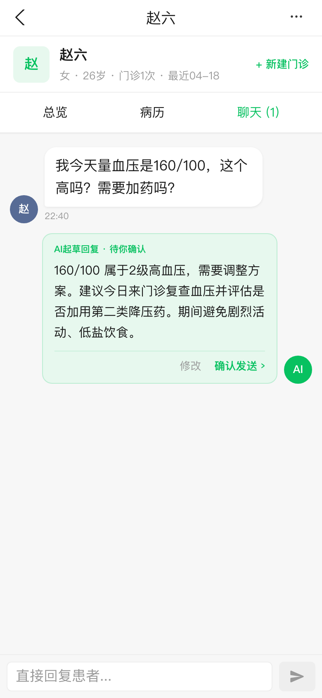
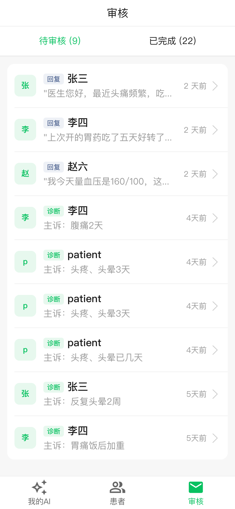

Three columns per row: Live app screenshot → Current card close-up → Proposed card.
Static HTML prototypes; once approved I port the patterns to .jsx.
Design constraints (this round):
keep light, text-only action links — no heavy solid buttons.
No new tag system this round.
Track 1 — 依据 / 风险 / 触发规则 triplet the main move · ~2–3 sessions
Every surface that shows AI output gains a 依据 / 风险 / 规则 strip: which KB rule fired, what could go wrong, which of the doctor's own rules matched.
Zero "confidence tiers", zero "AI 正在…" narration. This is what makes it feel intelligent vs. AI-branded.
A · AI draft reply in chat
Live

Chat draft · 修改 / 确认发送 ›
× Current
AI 起草回复 · 待你确认
160/100 属于 2 级高血压，需要调整方案。建议今日来门诊复查血压并评估是否加用第二类降压药…
修改确认发送 ›
Already light text actions — good baseline. Missing: why this reply and what to watch for.
→ Same draft + triplet
AI 起草回复 · 待你确认
160/100 属于 2 级高血压。建议今日门诊复查并评估加用 CCB…
依据 2 级高血压 + 已使用 ACEI → 你的"ACEI 与 ARB 不联用"规则 [KB-103]
风险 家族遗传病史 · 延误复查可能错过靶器官损害
规则 匹配：血压分级处理 · 药物联用禁忌
修改
确认发送 ›
B · AI 摘要 on patient 总览
Live
AI 摘要 at top of 总览 — just text
× Current
✨ AI 摘要
72 岁女性，高血压、2 型糖尿病史，新发头痛伴呕吐、视物模糊，血压 168/98mmHg，术后迟发性血肿高风险…
Doctor reads, then wonders: why did AI flag this? What rule fired? What should they watch for?
→ Summary + triplet
✨
AI 摘要
2 分钟前
72 岁女性，高血压、2 型糖尿病史，新发头痛伴呕吐、视物模糊，血压 168/98mmHg，术后迟发性血肿高风险。
依据 头痛 + 视物模糊 + 高血压 + 术后 2 周 → 你的"颅高压三联征"规则 [KB-12]
风险 延误 CT 可能错过迟发性出血；SBP >180 时建议急诊处理
规则 匹配：术后随访优先级 · 颅内高压应急流程
查看完整病历
安排急诊 CT ›
AI has opinion anchored in the doctor's own rules. Light text-only actions, no heavy buttons.
C · 审核 queue item (AI suggestion)
Live

诊断/回复 rows — no rationale shown
× Current
李四 · 主诉：腹痛2天
AI 建议：术后迟发性血肿
4 天前
Doctor taps in to find out why AI flagged this — context should be up-front.
→ With triplet inline
依据 术后 + 新发腹痛 + 血压偏高 → 你的"术后迟发性出血筛查"规则 [KB-7]
风险 延误影像检查可能错过活动性出血
暂不采用
查看详情 ›
Same row, rationale visible without an extra tap. Light text actions only.
Track 2 — Reading density in 临床资料 quick polish · ~1 hour
Medical history renders as a wall of text. Fixed-width labels on the left create scanning anchors.
Same content, faster to scan.
Live
既往 section on 总览 — dense paragraph
× Wall of text
高血压病史 10 年，口服氨氯地平 5mg/日，血压控制可。2 型糖尿病 5 年，口服二甲双胍。无药物过敏史。
→ Fixed-width anchors
高血压10 年 · 氨氯地平 5mg/日
糖尿病5 年 · 二甲双胍
过敏史无
Labels on left align consistently. No new styles — just a small layout component.
Track 3 — Reviewer's "confidence tiers" recommend against
Reviewer proposed 🟢 高置信 / 🟡 中置信 / 🔴 风险提示 pills on every card.
Conflicts with feedback_ai_invisible_not_performative, project_clinical_decision_support, project_cta_as_medical_decision.
Live
No confidence pills anywhere today
× Reviewer's proposal
🟢 高置信
🟡 推荐采纳
AI 建议：加用钙通道阻滞剂
血压 160/100，建议加用 CCB…
Invites doctor to grade the AI. Confidence score implies an accuracy metric — doctors will (rightly) distrust it.
→ Triplet approach
加用钙通道阻滞剂
血压 160/100，ACEI 已用 10 年
依据 你的 KB-103：ACEI 血压控制不佳 → 优先 CCB
风险 初始可能出现踝部水肿，需告知患者
不采用
确认 ›
AI has opinion expressed through the doctor's own rules. Doctor acts because it's their rule firing.
Decision summary
Track 1 · Main move:
依据 / 风险 / 规则 triplet on AI 摘要, chat drafts, and 审核 rows.
Needs backend to surface which KB rule matched; light text actions throughout, no heavy buttons. ~2–3 sessions.
Track 2 · Quick polish:
fixed-width labels in 临床资料 rows.
Pure UI, ~1 hour.
Track 3 · Don't do:
confidence-tier pills.
Conflicts with invisible-AI thesis.